The Meta Rose: Shared Resonance
Melbourne Fringe Festival / 2026
Acquisition enquiry
Tell me which work interests you and where you would like to present it.
- minniepark.studio@gmail.com
- Subject
- Artwork acquisition enquiry, The Meta Rose: Shared Resonance
Or copy the address into your email service.
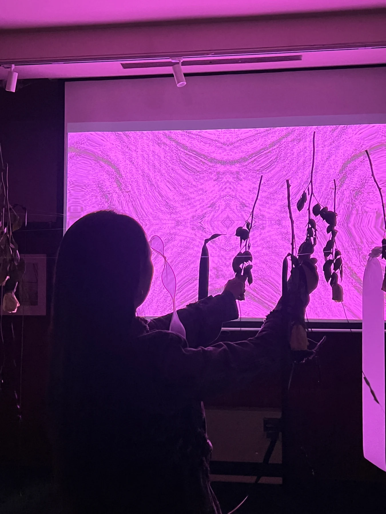
Living roses, audience bodies and responsive digital images connect naming, intervention, witnessing and material time in the Melbourne presentation of Meta Rose.
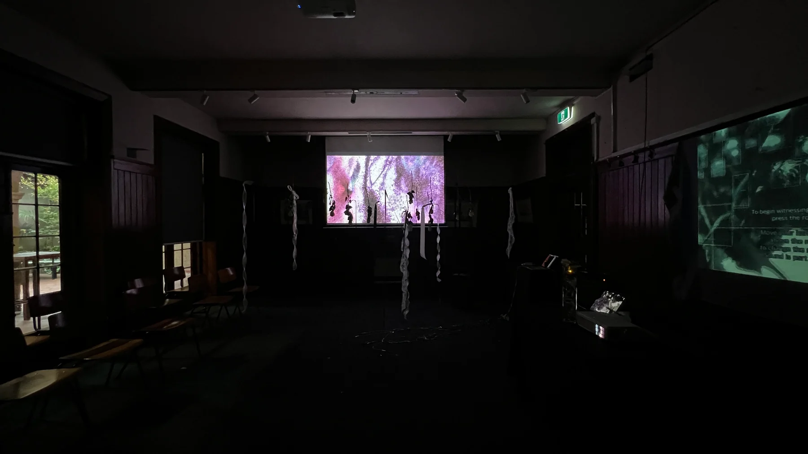
Melbourne presentation
The work was presented at Melbourne Fringe Festival from 30 September to 4 October 2026 in the Celia Little Room at The Mission to Seafarers Victoria, Docklands. Living roses connected tactile encounters with layered moving image and an original soundscape, including natural textures and artist-recorded samples. This presentation accommodated individual interactions as well as collective activation through shared presence. Visitors could also observe without touching the installation.
The Melbourne presentation brings together four works, Naming, Intervention, Witness and Record. Each establishes a distinct encounter with the rose through touch, gesture, sustained observation or the record of making. Visitors can move between them without following a required sequence.
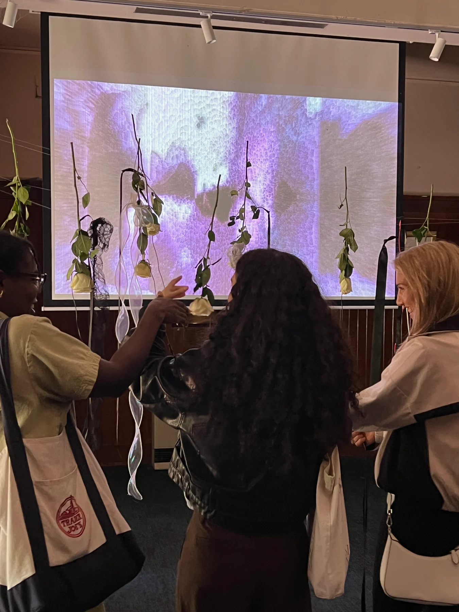
01 / Naming
The participant holds a black ribbon while touching hanging living roses. Each rose activates a different layer of light and sound; sustained contact deepens a response and additional flowers combine layers. Holding the white and black ribbons together requests a capture of the selected moment.
A living flower is both the interface and a material changed by contact. Its gradual drying and wear remain present beside a digital response that can be repeated. The work holds these different times together within the act of touching.
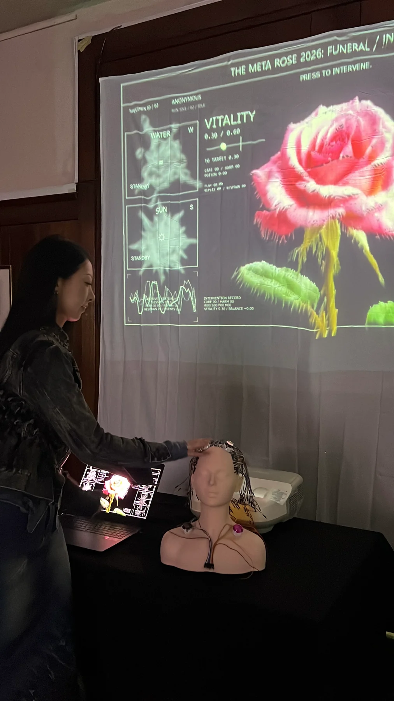
02 / Intervention
A physical-button interface and camera-based tracking allow visitors to intervene in a responsive rose-skeleton body. A rectangle formed with thumb and index finger reveals a camera mask; an open five-finger gesture reveals another mask carrying the visitor’s selected colour and optional name. The participant appears within the image they are also acting upon.
Care and damage do not separate into a simple positive and negative sequence. An action that sustains one balance may disturb another. In the Melbourne configuration, holding any two buttons on the Rose Human Interface for five seconds requests a capture.
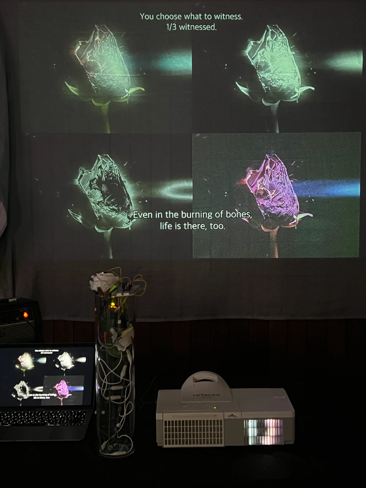
03 / Witness
A hand moves vertically near a rose to intervene in moving-image time. Three slow acts of witnessing allow an initially distorted rose-skeleton figure to be encountered within the image. A rose button marks the moment when the visitor feels they have found the figure. Stillness and sustained looking remain part of the encounter.
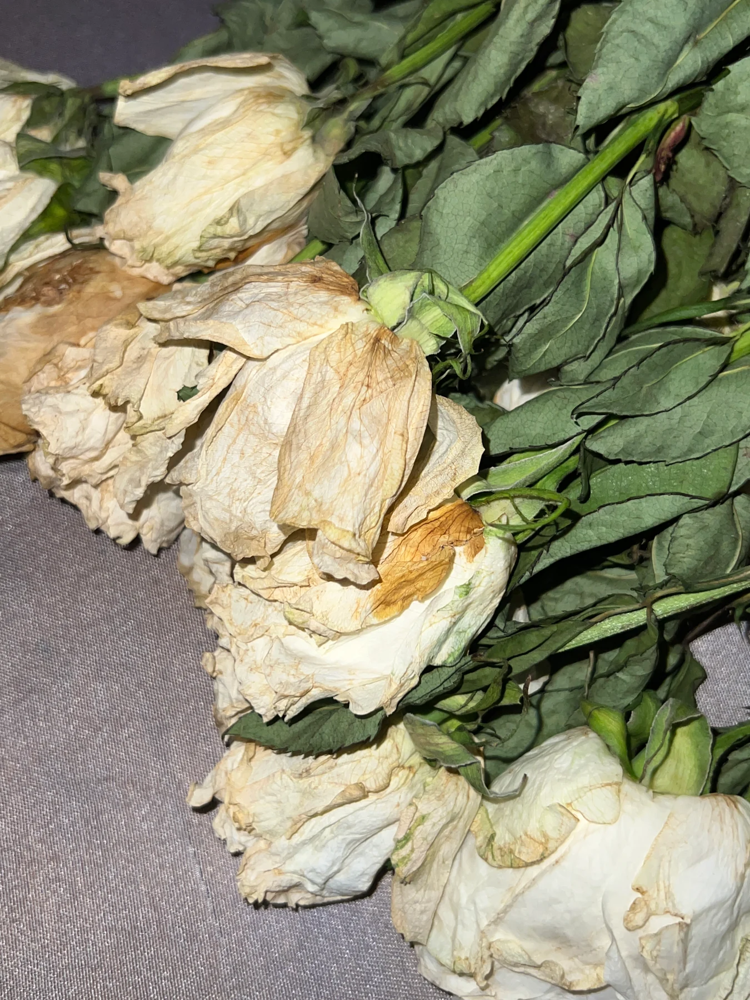
04 / Record
A silent, looping film records hands, connections, failed tests and repetitions behind the installation. It stands as a work about material labour and making time. It does not require a fixed beginning or end, and it does not produce a personal capture.
Participation records and access
The Melbourne Phone Hub is an optional companion for selected colour, an optional name and captures requested by the visitor. A random Rose number returns the images of a visit without asking for a legal name. These records concern choices within the artwork, not an objective classification of a person’s emotional state.
The presentation received support from Access Fringe to improve accessibility.
Technical details
Melbourne Fringe Festival / September-October 2026
- Medium
- Interactive installation allowing individual interaction, collective activation or observation without touching.
- Materials
- Hanging living roses, ribbons and conductive contacts, projected moving image, a physical-button interface, camera and sound.
- Dimensions
- Variable according to venue and installation configuration.
- Tools / software
- TouchDesigner, conductive touch, body and hand tracking, physical controls and an optional Phone Hub for requested captures.
- Artist / production
- Minnie Park, concept, exhibition planning and production.
Project documentation
Melbourne Fringe Festival, official 2026 event ↗Melbourne Phone Hub ↗Selected documentation
Visual Index →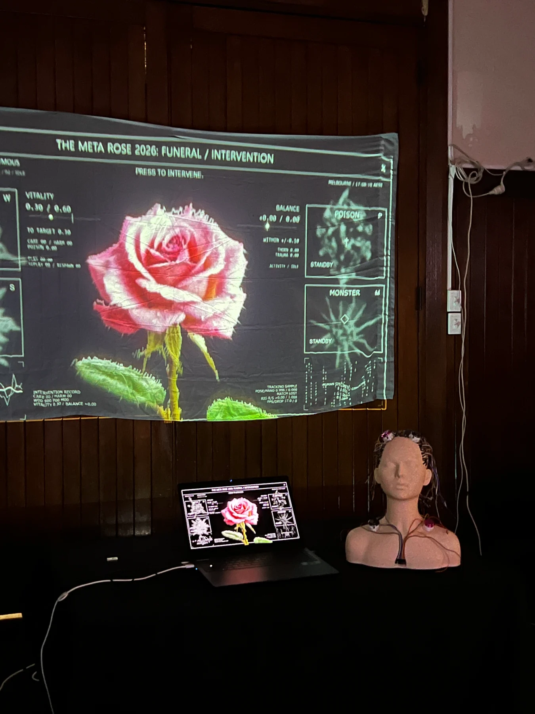
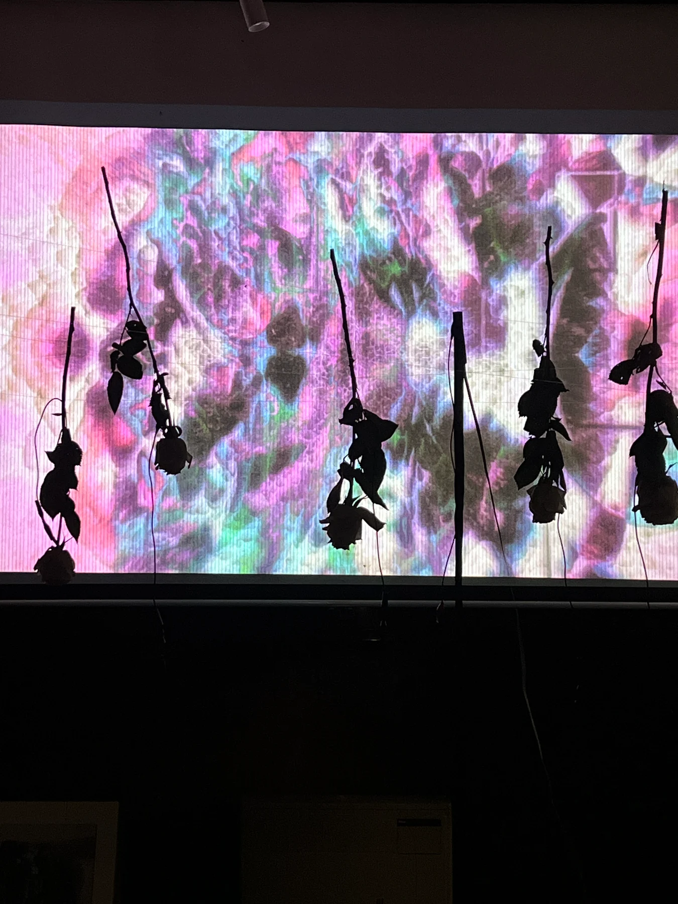
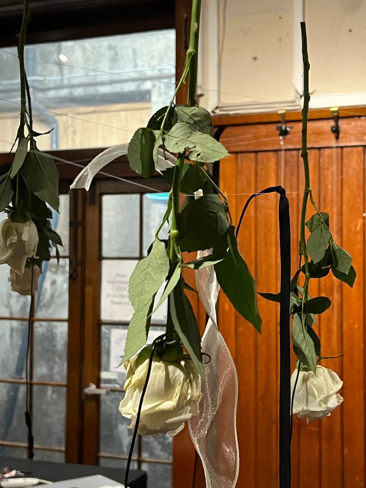
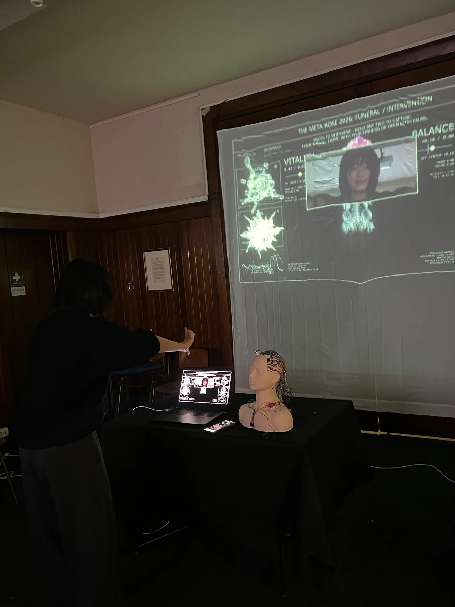
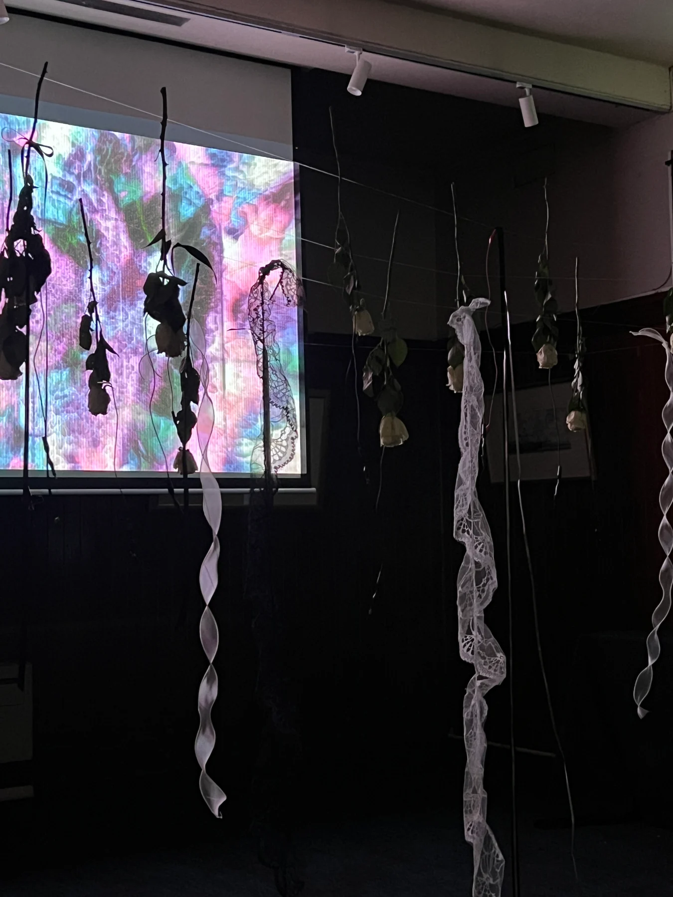
Acquisition enquiry →
Tell me which work interests you and where you would like to present it.
- minniepark.studio@gmail.com
- Subject
- Artwork acquisition enquiry, The Meta Rose: Shared Resonance
Or copy the address into your email service.